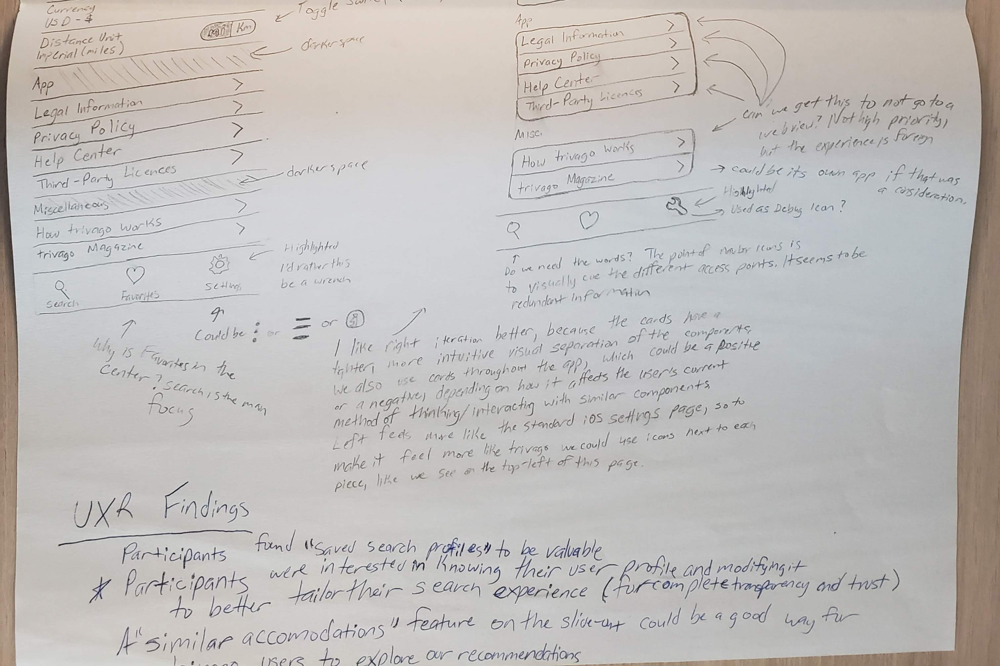

Internship Summary
In the summer before my last semester of university, I worked as a UX Design Intern at trivago in Düsseldorf, Germany. I worked in a team of three designers in trivago’s mobile apps team, designing new and improved mobile features for the trivago iOS and Android apps. Sketch and Abstract were my main digital tools.
To accomplish these overarching goals, I conducted self-guided research on the product’s strengths and flaws, created several feature roadmaps, collaborated with my design team to iterate on solutions, contributed to the mobile Design System, delivered high-fidelity prototypes to the development team, and also implemented some of my own designed features in the software engineering team.
Beyond my immediate team, I also participated in regular design feedback sessions— both presenting my own work for feedback and suggestions, and giving my input on the work of the other designers across trivago’s Hotel Search team. Overall, I really enjoy the problem-solving of design and applying Design Thinking principles to various challenges.
Settings Area Redesign
Context
One of my main projects for the summer was a complete redesign of the settings area and design of new, upcoming features. The settings area of trivago’s mobile apps had been long since outdated, according to my own personal assessment and the input from the product managers and other mobile designers. The area was visually and conceptually disorganized, and its functionality did not match the users’ needs concerning accessibility of important information.
In addition to this, in both my research and in prior research done by the User Research team, I found that the overall app felt very transactional and impersonal for the users. When given the task, I sought to improve the in-app experience by giving it a more solid character and personality, as well as solving the more technical issues at hand.
Previous Settings Screen
The previous settings screen shows text cells crowded with information, unnecessary extra steps to complete actions (such as changing the distance units), varying spacing between the cells, and no clear visual divisions between or organization of the text cells. The image containing the button was also found to be very confusing for users, and did not convey important information.
Process
I was given full ownership to drive the project, and when initially given the requirements, I spent a few days researching, analyzing, and understanding the scope of the project, the user’s expectations and goals, the technical requirements and constraints of the app’s implementation, and the overarching goals of the product. Given my background in software engineering, I was able to also take a closer look at the implementation with some of the iOS engineers to fully understand those technical constraints before moving to explorations of a solution.
I used anlog user-journey maps to specify the experience and design for a total of four areas of the iOS application: the initial settings page, user payment methods flow, user profile flow, and the user’s overview of bookings made within the app. Over the span of two months, I revised and updated my ideas based on the feedback I received from other designers to come up with a personalized and coherent solution for the various settings areas.
Thinking With a Pencil
This is one of the early-stage documents I used to solidify my understanding of the problem and generate some possible solution paths.
Challenges
A major challenge during my process was a lack of clarity and direction concerning aspects of the product itself, which led to stalls in the design process for certain features until the product decisions could be further solidified. When faced with this, I documented the roadblocks and concerns, and created user journey maps to indicate where the sticking points were from a user’s perspective. The journey map was then able to relay the issues concretely for the relevant product managers.
Another key challenge I faced was creating an “on-brand” solution in a system with an inconsistent brand and design system. I made note of the inconsistencies and raised these concerns to the senior designers in the team, and after taking inventory of all of these issues, we formulated plans and timelines to incrementally standardize all of the pieces across the apps and eventually the web platforms as well.
Outcome
The result of the project was an implementation of the settings area that met the requirements both from a product- and user-focused standpoint. Many of my ideas did not make it into the final approved version, but from this process, I was able to learn a lot about the process of moving a design through the pipeline in an industry environment.
The final release of parts of the implementation was put on hold due to other product-related issues beyond the scope of the project, but the solution I delivered were verified and tested by members of the team and in some parts through online user click-testing, which was an overall positive.